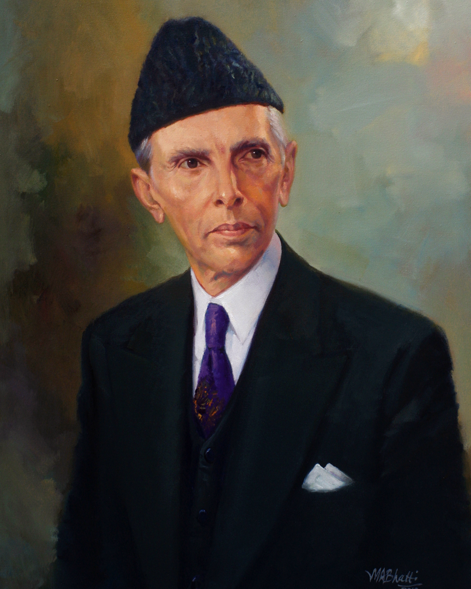
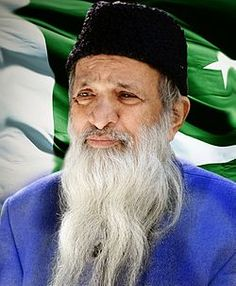

Muhammad Ali Jinnah (born Mahomedali Jinnahbhai; 25 December 1876 – 11 September 1948) was a barrister, politician and the founder of Pakistan. Jinnah served as the leader of the All-India Muslim League from 1913 until the inception of Pakistan on 14 August 1947, and then as the Dominion of Pakistan's first Governor-General until his death. He is revered in Pakistan as the Quaid-i-Azam ("Great Leader") and Baba-i-Qaum ("Father of the Nation"). His birthday is observed as a national holiday in Pakistan.
Born at Wazir Mansion in Karachi, Jinnah was trained as a barrister at Lincoln's Inn in London, England. Upon his return to British India, he enrolled at the Bombay High Court, and took an interest in national politics, which eventually replaced his legal practice. Jinnah rose to prominence in the Indian National Congress in the first two decades of the 20th century.
As the first Governor-General of Pakistan, Jinnah worked to establish the new nation's government and policies, and to aid the millions of Muslim migrants who had emigrated from neighbouring India to Pakistan after the two states' independence, personally supervising the establishment of refugee camps. Jinnah died at age 71 in September 1948, just over a year after Pakistan gained independence from the United Kingdom.

Imran Ahmed Khan Niazi HI PP (Urdu: عمران احمد خان نیازی, born 5 October 1952) is the 22nd[n 1] and former Prime Minister of Pakistan and the chairman of the Pakistan Tehreek-e-Insaf (PTI). Before entering politics, Khan was an international cricketer and captain of the Pakistan national cricket team, which he led to victory in the 1992 Cricket World Cup. He was chancellor of the University of Bradford in the United Kingdom from 2005 to 2014.
Khan was born to a Pashtun family in Lahore in 1952, and graduated from Keble College, Oxford in 1975. He began his international cricket career at age 18, in a 1971 Test series against England. Khan played until 1992, served as the team's captain intermittently between 1982 and 1992, and won the Cricket World Cup, in what is Pakistan's first and only victory in the competition. Considered one of cricket's greatest ever all-rounders, Khan registered 3,807 runs and took 362 wickets in Test cricket and was inducted into the ICC Cricket Hall of Fame.
Khan founded the Pakistan Tehreek-e-Insaf (PTI) in 1996, and serves as the party's chairman. By winning a seat in the National Assembly in 2002, he served as an opposition member from Mianwali until 2007. PTI boycotted the 2008 general election. In the subsequent election PTI became the second-largest party by popular vote. In regional politics, PTI led a coalition government in Khyber Pakhtunkhwa from 2013, with Khan delegating this leadership to Mahmood Khan after being elected as Prime Minister in 2018.

Abdul Sattar Edhi NI LPP GPA (Urdu: عبد الستار ایدھی; 28 February 1928 – 8 July 2016) was a Pakistani humanitarian, philanthropist and ascetic who founded the Edhi Foundation, which runs the world's largest volunteer ambulance network, along with various homeless shelters, animal shelters, rehabilitation centres, and orphanages across Pakistan. Following his death, his son Faisal Edhi took over as head of the Edhi Foundation.
ver his lifetime, the Edhi Foundation expanded, backed entirely by private donations, which included establishing a network of 1,800 ambulances. By the time of his death, Edhi was registered as a parent or guardian of nearly 20,000 adopted children of whom he was an active caretaker. He is known amongst Pakistanis as the "Angel of Mercy" and is considered to be Pakistan's most respected and legendary figure. In 2013, The Huffington Post claimed that he might be "the world's greatest living humanitarian".
Edhi maintained a hands-off management style and was often critical of the corruption commonly found within the religious organizations, clergy and politicians. He was a strong proponent of religious tolerance in Pakistan and extended his support to the victims of Hurricane Katrina and the 1985 famine in Ethiopia. He was nominated several times for the Nobel Peace Prize.